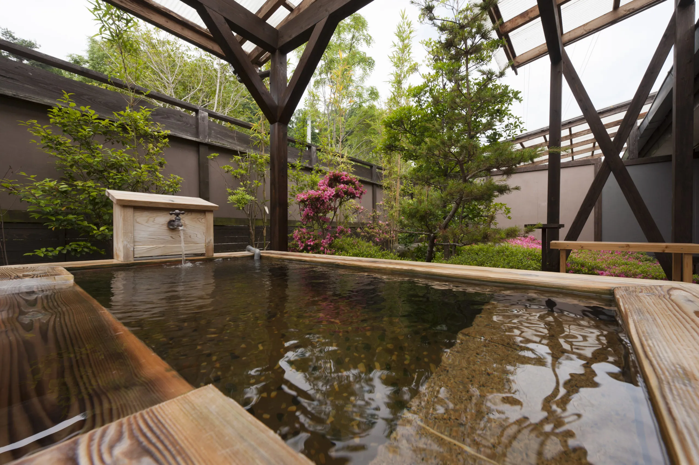
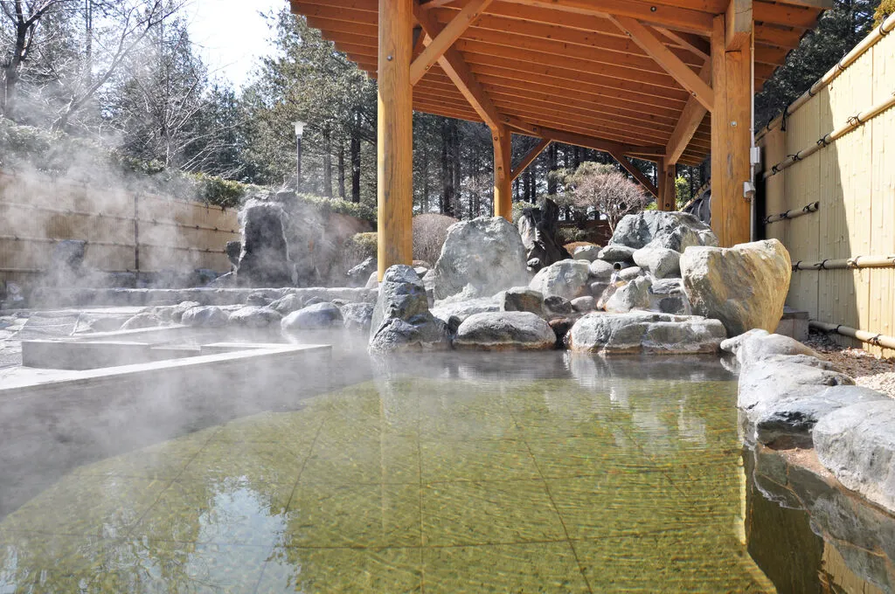

?? ܇�Ǽs10�� ?? Approx. 10 min driveƽ��:Weekdays:
����ף:Weekends/Holidays:
�J��¶���L��:Private Bath:
?? TEL: 0287-36-6802 / 0120-27-1126(���s����)
?? TEL: 0287-36-6802 / 0120-27-1126 (Reservation)
? �ܸ�: 9:00��21:00
? Reception: 9:00 AM �C 9:00 PM
?? ס��: ��ľ�h��횉cԭ�о���548-350
?? Address: 548-350 Iguchi, Nasu-shiobara City, Tochigi
??? �v܇��: 50̨(�o��)
??? Parking: 50 slots (Free)
?? ��ʽ�����Ȥ�Ҋ�� ?? Visit Official Website ��
?? ܇�Ǽs15�� ?? Approx. 15 min driveƽ��:Weekdays:
����ף:Weekends/Holidays:
����ȯ:Multi-use Ticket:
?? TEL: 0287-36-1025
?? TEL: 0287-36-1025
?? ס��: ��ľ�h��횉cԭ��ǧ����799
?? Address: 799 Senbonmatsu, Nasu-shiobara City, Tochigi
?? ��ʽ�����Ȥ�Ҋ�� ?? Visit Official Website ��?? TEL: 0287-65-1126
?? TEL: 0287-65-1126
?? ס��: ��ľ�h��횉cԭ����ɼ�֕�����41
?? Address: 41 Sonebayashi, Karasugi, Nasu-shiobara City, Tochigi
��ʽ�۩`���ک`�����ʤ��ΤǤ��{�٤���������
No official website available (Please search online).
?? TEL: 0287-34-1126
?? TEL: 0287-34-1126
?? ס��: ��ľ�h��횉cԭ���v��1425-211
?? Address: 1425-211 Sekiya, Nasu-shiobara City, Tochigi
??? �v܇��: 70-100̨(�o��)
??? Parking: 70-100 slots (Free)
?? ��ʽ�����Ȥ�Ҋ�� ?? Visit Official Website ��?? ��횉cԭ���ꥢ ?? Nasu-shiobara Area
?? ��ʽ�����Ȥ�Ҋ�� ?? Visit Official Website ��?? ������� ?? Yumoto, Nasu Town
?? ��ʽ�����Ȥ�Ҋ�� ?? Visit Official Website ��?? ������� ?? Yumoto, Nasu Town
?? ��ʽ�����Ȥ�Ҋ�� ?? Visit Official Website ��?? ������� ?? Yumoto, Nasu Town
?? ��ʽ�����Ȥ�Ҋ�� ?? Visit Official Website ��?? ������� ?? Yumoto, Nasu Town
��ʽ�۩`���ک`�����ʤ��ΤǤ��{�٤��������� No official website available (Please search online).
?? ������ ?? Nasu Town
?? ��ʽ�����Ȥ�Ҋ�� ?? Visit Official Website ��?? �cԭ��Ȫ ?? Shiobara Onsen
?? ��ʽ�����Ȥ�Ҋ�� ?? Visit Official Website ��?? �cԭ��Ȫ ?? Shiobara Onsen
?? ��ʽ�����Ȥ�Ҋ�� ?? Visit Official Website ��?? �cԭ��Ȫ ?? Shiobara Onsen
?? ��ʽ�����Ȥ�Ҋ�� ?? Visit Official Website ���� �����Μ�(܇10��)
������ԴȪ���ȥ��ȥ�������
�� Ootaka-no-Yu (10 min drive)
5-star source, silky skin water
�� ��횉cԭ�kǰ��Ȫ(܇5��)
�����Μ�(܇10��)
�ʻ��Μ�(܇10-15��)
�� Nasu-shiobara Ekimae (5 min)
Ootaka-no-Yu (10 min)
Saika-no-Yu (10-15 min)
�� ǧ������Ȫ(��23�r)
�����Μ� ҹ�β�(��21�r/Ҫ�_�J)
�� Senbonmatsu (until 11 PM)
Ootaka-no-Yu (until 9 PM/check)
�� ¹�Μ�(500��)
С¹�Μ�(500��)
�� Shika-no-Yu (500 yen)
Kojika-no-Yu (500 yen)
�� ������Ȫ
����Ȫ
ԪȪ�^
�� Omaru Onsen
Kita Onsen
Gensen-kan
�� �cԭ�����Ĥ��Μ�(�ש`�븶)
�� Shiobara Akatsuki-no-Yu (with pool)
�� ����Ȫ
(�ƥ��ޥ�?���ޥ�)
�� Kita Onsen
(Thermae Romae)
��횷���:Nasu Area:
�cԭ����:Shiobara Area:
A. ���ۥƥ뤫������ӭ�Ϥ������ޤ����������`���Х����������ե����ȤǤ����ڤ������ޤ���
A. We do not provide shuttle services from the hotel, but our front desk can assist with taxi and bus information.
A. ʩ�O�ˤ��ꮐ�ʤ��ޤ����ؤ��J���L�Τ�ҹ�β��������äΈ��Ϥ���ǰ�˸�ʩ�O�ؤ������Ϥ碌����������
A. It varies by facility. Please contact each facility in advance, especially for private baths or night use.
A. �य��ʩ�O�ǥ������Ӥ������ޤ������ֲΤ����뤳�Ȥ����ᤷ�ޤ���
A. While many facilities sell towels, we recommend bringing your own.
A. ���������������`�ω�ɫ���������Ԥ������ޤ����ޤ�����������������ԡ�ᤷ�ä���ϴ�������Ƥ���������
A. Metal jewelry may tarnish. Also, those with sensitive skin should rinse off thoroughly after bathing.